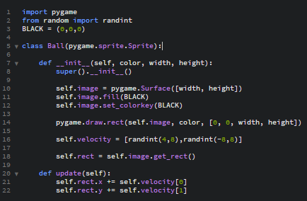

Dodajanje žogice
Naredimo novo datoteko in ponovno zapišemo import pygame.
Pod tem zapišemo from random import randint
Za barvo pa damo spet črno.
Ponovno moramo narediti nov class, kot smo ga pri Paddle-u, zato napišemo class Ball(pygame.sprite.Sprite).
Nato zapišemo naslednje ukaze:
- def __init__(self, color, width, height):
- super().__init__()
- self.image = pygame.Surface([width, height])
- self.image.fill(BLACK)
- self.image.set_colorkey(BLACK)
- pygame.draw.rect(self.image, color, [0, 0, width, height])
- self.velocity = [randint(4,8),randint(-8,8)]
- self.rect = self.image.get_rect()
- def update(self):
- self.rect.x += self.velocity[0]
- self.rect.y += self.velocity[1]
Na koncu bi koda morala izgledati takole:

Ta program shranimo kot ball.py
Vrnemo se nazaj na main.py in na vrhu dopišemo from ball import Ball.
Dodati moramo še Sprite za žogico zato kar pod kodo za Paddle Sprite dopišemo:
- ball = Ball(WHITE,10,10)
- ball.rect.x = 345
- ball.rect.y = 195
V sprite list moramo še dodati Sprite žogice zato še dopišemo all_sprites_list.add(ball)
Dodati moramo še kodo da se bo žogica odbijala od vseh 4-ih sten:
- if ball.rect.x>=790:
- ball.velocity[0] = -ball.velocity[0]
- if ball.rect.x<=0:
- ball.velocity[0] = -ball.velocity[0]
- if ball.rect.y>590:
- ball.velocity[1] = -ball.velocity[1]
- if ball.rect.y<40:
- ball.velocity[1] = -ball.velocity[1]
Sedaj moramo še dodati, kaj e zgodi če se žogica dotakne Paddle-a, hočemo da se odbije:
Najprej v ball.py napišemo:
- def bounce(self):
- self.velocity[0] = -self.velocity[0]
- self.velocity[1] = randint(-8,8)
Nato pa še v main.py dopišemo:
- if pygame.sprite.collide_mask(ball, paddle):
- ball.rect.x -= ball.velocity[0]
- ball.rect.y -= ball.velocity[1]
- ball.bounce()